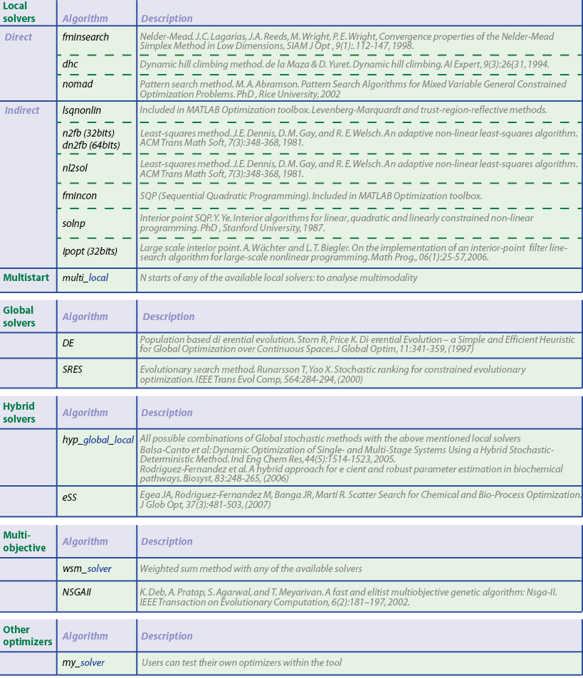

Nonlinear programming solvers
Contents
Numerical solvers for nonlinear optimization problems
AMIGO2 offers a suite of NLP solvers so as to handle different problems: convex and non-convex, and multi-objective. Direct and indirect local methods, global stochastic methods, sequential hybrids and metaheuristics are available.
In addition the user may add new solvers to AMIGO2.
The following table summarizes available methods:

How to chose a solver for single objective problems
The algorithms can be chosen by modifying the field
inputs.nlpsol.nlpsolver = 'local_fmincon'; % local_'nameofthelocalsolver' to run any of the local % solvers inputs.nlpsol.nlpsolver = 'multi_fmincon'; % multi_'nameofthelocalsolver' to run a multi-start of % any of the local solvers inputs.nlpsol.nlpsolver = 'de'; % to use differential evolution inputs.nlpsol.nlpsolver = 'sres'; % to use stochastic ranking evolutionary search inputs.nlpsol.nlpsolver = 'hyb_de_fmincon';% hyb_de_'nameofthelocalsolver' to run a sequential hybrid % with de and any local method inputs.nlpsol.nlpsolver = 'hyb_sres_fmincon';% hyb_sres_'nameofthelocalsolver' to run a sequential % hybrid with sres and any local method inputs.nlpsol.nlpsolver = 'ess'; % to use Enhanced Scatter search
How to chose a solver for multi-objective problems
The algorithms can be chosen by modifying the field
inputs.nlpsol.nlpsolver = 'wsm_ess'; % wsm_'nameofNLPsolver' to use the weighting sum method % with any of the NLP solvers inputs.nlpsol.nlpsolver = 'nsga2'; % to use the multi-objective genetic algorithm
NLP solver settings
All NLP solvers have options. These options can be modified in the solver specific structures:
Differential evolution
inputs.nlpsol.nlpsolver='de'; % In this case the problem will be solved with DE inputs.nlpsol.DE.NP=100; % Size of population - recommended 10*N variables inputs.nlpsol.DE.strategy=7; % Strategy to define population operations in DE: % 1 --> DE/best/1/exp 6 --> DE/best/1/bin % 2 --> DE/rand/1/exp 7 --> DE/rand/1/bin % 3 --> DE/rand-to-best/1/exp 8 --> DE/rand-to-best/1/bin % 4 --> DE/best/2/exp 9 --> DE/best/2/bin % 5 --> DE/rand/2/exp else DE/rand/2/bin inputs.nlpsol.DE.cvarmax=1e-8; % Stopping criterion: Maximum variance for the population inputs.nlpsol.DE.itermax=500; % Stopping criterion: Maximum number of iterations % Corresponds to NP*itermax function evaluations inputs.nlpsol.DE.refresh =2; % Interval of iterations for displaying results
Stochastic ranking evolutionary search
inputs.nlpsol.nlpsolver='sres'; % In this case the problem will be solved with % a global evolutionary approach SRES inputs.nlpsol.SRES.NP=200; % Size of population (200, default) inputs.nlpsol.SRES.itermax= 1000; % Maximum number of iterations (1000, default) % Each iteration 200 funtion evaluations inputs.nlpsol.SRES.pf=0.45; % Pressure on fitness in [0 0.5] try around 0.45 % for unconstrained cases try >0.5 inputs.nlpsol.SRES.varphi=1; % Expected rate of convergence inputs.nlpsol.SRES.cvarmax=1.0e-12; % Stopping criterium: population variance
Enhanced Scatter Search
inputs.nlpsol.nlpsolver='ess'; % In this case the problem will be solved with eSS inputs.nlpsol.eSS.maxeval=20000; % Maximum number of function evaluations inputs.nlpsol.eSS.maxtime=600; % Maximum allowed time in s for eSS inputs.nlpsol.eSS.iterprint=1; % Print each iteration on screen: 0-Deactivated % 1-Activated (1, default) inputs.nlpsol.eSS.log_var= []; % Indexes of the variables which will be used % to generate diverse solutions in different % orders of magnitude inputs.nlpsol.eSS.local.solver='nl2sol'; % Choose local solver % 0: Local search deactivated % 'fminsearch','nomad', 'dhc' % 'fmincon','solnp','ipopt' % for PE:'n2fb','dn2fb','lsqnonlin','nl2sol' inputs.nlpsol.eSS.local.iterprint=0; % Print each iteration on screen: 0-Deactivated % 1-Activated
For more eSS options, please check ess_options_defaults.m
Add new optimizers
AMIGO2 enables the possibility of using user's own optimizers. Introducing a new optimizer requires three steps:
- To define inputs and outputs so as to make the solver compatible with AMIGO2.
- Add the following input arguments: inputs, results, privstruct
- Provide (at least) the following outputs: best cost function, best decision variable vector, computational cost and convergence curve.
- OPTIONAL: Define solver options somewhere in the inputs structure, otherwise define them within the solver code.
- OPTIONAL: Define bounds and guess for the decision variables somewhere in the inputs structure, othewise add additional input arguments.
- To implement a script that calls the new optimizer as follows: [outputs]= NEWSOLVER(cost_function,inputs,results,privstruct)
- NEWSOLVER: regards the name of the NLP solver.
- cost_function: should be 'AMIGO_PEcost'; 'AMIGO_OEDcost' or inputs.pathd.DO_function for PE and RIdent; OED and DO, respectively.
- Assign results.nlpsol.vbest; results.nlpsol.fbest; results.nlpsol.cpu_time; results.nlpsol.conv_curve to proceed with AMIGO2 postprocessing.
- Call the AMIGO2 task selecting the solver as: 'my_NEWSOLVER'
For a practical example, please follow the scripts included in the Examples\use_your_own_optimizer folder.